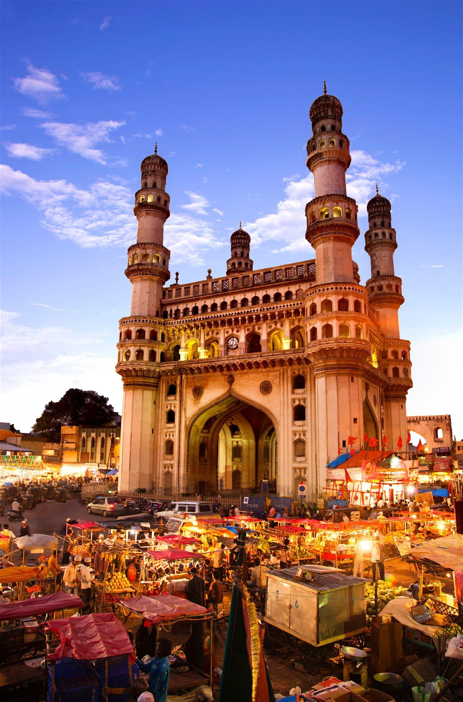
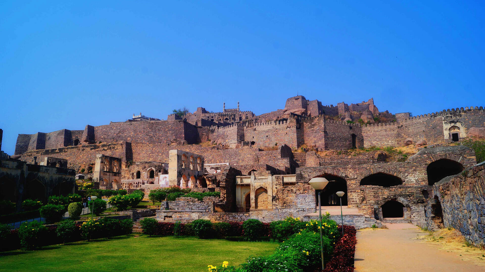
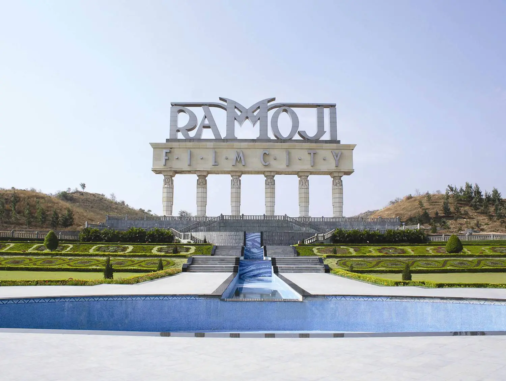
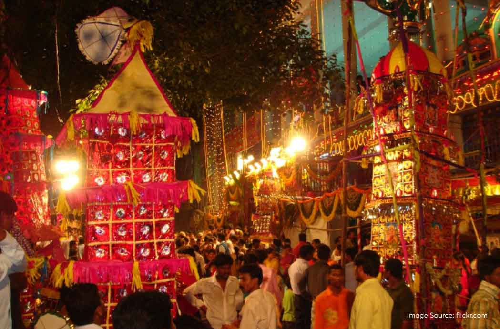

The Land of Nizams, Temples & Festivals

Charminar is the iconic landmark of Hyderabad and Telangana. Built in 1591, this 16th-century mosque and monument reflects Indo-Islamic architecture and is a bustling hub for culture and trade.
The surrounding markets, including Laad Bazaar, are famous for traditional jewelry, bangles, and local crafts.

Golconda Fort, near Hyderabad, is renowned for its strong architecture, acoustic system, and historical significance as a diamond trading center.
Visitors enjoy exploring the fort’s massive gates, royal halls, and sunset views from the top of the hill.

Ramoji Film City is the world’s largest film studio complex, located in Hyderabad. It showcases Telangana’s modern culture, entertainment, and tourism.
Visitors can explore film sets, gardens, adventure activities, and enjoy theme park attractions in a cinematic environment.

Bonalu is a traditional Hindu festival celebrated in Telangana to honor Goddess Mahakali. Women offer cooked rice in pots while men participate in colorful processions with music and dance.
It is a vibrant display of devotion, culture, and community spirit, mainly observed in Hyderabad and Secunderabad.
Telangana is rich in folk arts like Perini dance, Lambadi embroidery, Telugu literature, and temple architecture. Its festivals, music, and cuisine reflect the unique identity of the state.
From Hyderabadi biryani to traditional handicrafts and vibrant folk dances, Telangana’s culture celebrates diversity, history, and artistic excellence.